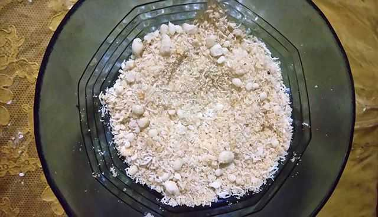

Sejarah
Diperkirakan Danau Toba terjadi saat ledakan sekitar 73.000-75.000 tahun yang lalu dan merupakan letusan supervolcano (gunung berapi super) yang paling baru. Bill Rose dan Craig Chesner dari Michigan Technological University memperkirakan bahwa bahan-bahan vulkanik yang dimuntahkan gunung itu sebanyak 2.800 km³, dengan 800 km³ batuan ignimbrit dan 2.000 km³ abu vulkanik yang diperkirakan tertiup angin ke barat selama 2 minggu. Debu vulkanik yang ditiup angin telah menyebar ke separuh bumi, dari Cina sampai ke Afrika Selatan. Letusannya terjadi selama 1 minggu dan lontaran debunya mencapai 10 km di atas permukaan laut. Kejadian ini menyebabkan kematian massal dan pada beberapa spesies juga diikuti kepunahan. Menurut beberapa bukti DNA, letusan ini juga menyusutkan jumlah manusia sampai sekitar 60% dari jumlah populasi manusia bumi saat itu, yaitu sekitar 60 juta manusia. Letusan itu juga ikut menyebabkan terjadinya zaman es, walaupun para ahli masih memperdebatkannya.
Setelah letusan tersebut, terbentuk kaldera yang kemudian terisi oleh air dan menjadi yang sekarang dikenal sebagai Danau Toba. Tekanan ke atas oleh magma yang belum keluar menyebabkan munculnya Pulau Samosir.
Tim peneliti multidisiplin internasional, yang dipimpin oleh Dr. Michael Petraglia, mengungkapkan dalam suatu konferensi pers di Oxford, Amerika Serikat bahwa telah ditemukan situs arkeologi baru yang cukup spektakuler oleh para ahli geologi di selatan dan utara India. Di situs itu terungkap bagaimana orang bertahan hidup, sebelum dan sesudah letusan gunung berapi (supervolcano) Toba pada 74.000 tahun yang lalu, dan bukti tentang adanya kehidupan di bawah timbunan abu Gunung Toba. Padahal sumber letusan berjarak 3.000 mil, dari sebaran abunya.
Geografis

Kompleks kaldera Toba di Sumatra Utara merupakan bagian dari Pegunungan Bukit Barisan. Kaldera Toba merupakan kaldera dengan letusan terbaru dari zaman kuarter dengan ukuran panjang 100 km dan lebar 30 km serta merupakan kaldera termuda keempat di dunia.
Diperkirakan terdapat 2.800 km3 material piroklastik dense-rock equivalent (DRE) yang dikenal sebagai tuff termuda Toba (Youngest Toba Tuff, YTT) dan dikeluarkan lewat sebuah letusan yang menjadi salah satu letusan gunung api terbesar dalam sejarah geologi terkini Bumi. Dua buah setengah kubah resurgent muncul setelah letusan yang kini menjadi Pulau Samosir dan Blok Uluan, dipisahkan oleh sebuah graben membujur yang menjadi Selat Latung. Setidaknya terdapat empat kerucut vulkanik, empat gunung api strato, dan tiga kawah yang dapat diamati di dan di sekitar Danau Toba. Salah satu kerucut yaitu Kerucut Tandukbenua terletak di sisi barat laut kaldera dan hanya ditumbuhi oleh vegetasi berkepadatan rendah yang menunjukkan bahwa peristiwa pembentukannya relatif baru. Di sebelah barat danau, terdapat Dolok Pusubukit masih aktif mengeluarkan solfatara.
Wisata Alam
Disekitar Danau Toba juga terdapat tempat-tempat menarik untuk dikunjungi. Bagi Anda yang mempunyai rencana berkunjung ke wisata Danau Toba bisa mencoba beberapa lokasi berikut
Pasir Putih Parbaba
Pasir Putih Parbaba adalah salah satu tempat wisata favorit yang ada di sekitar Danau Toba Sumatera Utara. Lokasinya berada di Desa Huta Bolon, Kecamatan Pangururan Kabupaten Samosir Sumatera Utara.
Berbeda dari Pantai–pantai indah yang ada di Bali yang memiliki ombak tinggi dan hamparan laut lepas, pantai Pasir putih Parbaba bukanlah pantai yang memiliki ombak kencang. Ketika berdiri di bibir pantai, kita bisa menyaksikan keindahan puncak bukit yang mengelilingi Danau Toba. Jika dipantai pinggir laut anginnya cukup kencang, disini anginnya sepoi – sepoi dan udara terkesan lebih sejuk.
Beragam aktivitas bisa kamu lakukan di tempat wisata yang satu ini. Selain belanja souvenir, menikmati keindahan alam Danau Toba dan hang out bareng teman dan keluarga, dengan mengeluarkan sedikit modal kamu bisa menyempurnakan liburan mu disini. Seperti bermain banana boat dan aktivitas air lainnya disini cukup lengkap.
Huta Ginjang

Huta Ginjang telah dikenal sebagai tempat wisata favorit di Sumatera Utara. Taman Sijaba adalah salah satu daya tariknya. Sebenarnya tempat ini merupakan hutan liar. Pada tahun 1993, pemerintah membukanya untuk umum. Lokasinya ada di Kecamatan Muara, Kabupaten Tapanuli Utara. Huta Ginjang menjadi tempat berkumpul, terutama saat liburan. Dekat ke danau, ada beberapa bukit. Ini cukup sempurna untuk bersantai. Berkat suasana yang menyegarkan. Sebagian besar wisatawan datang ke bukit baik di pagi maupun siang hari. Mereka menunggu matahari terbit atau terbenam yang indah. Ada juga banyak pohon pinus di dekatnya. Dengan atraksi alam ini, setiap orang bisa menemukan pengalaman yang menyenangkan disini. Benar-benar tempat yang tepat untuk bersantai!
Sipinsur
Taman Sipinsur merupakan salah satu lokasi wisata terbaik yang ada di Kabupaten Humbang Hasundutan, Sumatera Utara (Sumut). Di lokasi ini, wisatawan bisa melihat langsung luasnya Danau Toba. Lokasi Taman Sipinsur ini merupakan bagian dari dataran tinggi Humbang Hasundutan dengan panorama Danau Toba. Luas areanya sekitar 2 hektar dan berada pada ketinggian mencapai 1.213 mdpl. Selain melihat panorama Danau Toba, Taman Sipinsur ini juga ditanami pohon pinus. Lokasi ini juga cocok untuk berkemping. Bila tertutup kabut, Danau Toba tidak dapat terlihat. Lokasi bermain juga ada di taman ini.
Simarjarunjung
Bila diulas dari segi sejarahnya, bukit ini hampir sama dengan Kalibiru. Bila kalibiru ada waduk sermo, nah di Bukit Indah Simarjarunjung ini ada danau toba. Dengan view Danau Toba dan perbukitan yang mengelilinginya, Bukit Indah Simarjarunjung menjadi destinasi wisata yang kerap lalu lalang di timeline instagram. Pemandangannya dijamin akan membuat Anda terhipnotis dan betah berlama-lama berada di atas sana. Kamu bisa mencoba sky wing yang menjadi favorit akhir-akhir ini. Waktu terbaik untuk berkunjung ke lokasi ini adalah sore hari, karena anda bisa menikmati keindahan sunset dari atas gardu pandang. Selain udaranya yang sangat sejuk (dingin), suasana alam di sekitarnya juga masih sangat hijau.
Kuliner
Banyak sekali makanan khas Batak yang harus dicoba ketika berkunjung ke danau toba. Salah satu ciri masakan batak adalah kegemarannya menggunakan andaliman (Zanthoxylum acanthopodium) sebagai rempah utama. Mungkin bagi Anda yang sudah sering berkunjung ke Danau Toba tidak asing lagi dengan beberapa makanan khas Batak, akan tetapi bagi yang belum mengetahui apa saja makanan tersebut, anda boleh mencoba beberapa masakan khas batak berikut.
Arsik
Ikan Mas Na Narsik atau ikan Arsik adalah kuliner tradisional khas Toba yang kaya dengan bumbu dan rempah. Na Niarsik berarti di-marsik-kan atau dikeringkan. Ikan Arsik berarti ikan yang dimasak terus-menerus sampai kuahnya kering, hingga bumbunya menyerap ke ikan mas tersebut. Jika proses memasak benar, Na Niarsik dapat bertahan dua hari tanpa basi.
Na Niarsik adalah makanan yang menjadi bagian dari adat Batak yang memiliki cerita dari mulai kelahiran, perkawinan, hingga meninggal. Bumbu Na Niarsik sangat kaya dan beragam. Ada 16 macam bumbu dari andaliman, bunga kecombrang dan bawang Batak. Selain ikan mas, ikan laut seperti kembung dan kakap, dan daging juga dapat dijadikan bahan arsik.
Naniura
Naniura dalam bahasa Batak artinya ikan yang tidak dimasak melalui api namun baik dan enak dimakan. Naniura adalah makanan khas suku Batak yang kebanyakan berada di daerah Toba. Sekilas kuliner ini konsepnya mirip dengan sushi dari Jelang dan Ceviche dari Peru.
Bedanya kalau ceviche disajikan dengan irisan bawang merah besar di atasnya, Naniura disiram dengan bumbu halus berwarna kuning. Jika dahulu kala naniura hanya dihidangkan untuk raja-raja Batak, sekarang makanan khas ini sudah bisa dinikmati oleh banyak orang.
Ikan mas mentah dibersihkan duri dan lendirnya dulu. Lalu dimatangkan dengan cara merendamnya dengan air asam Jungga atau jeruk purut. Proses ini membuat kualitas protein di ikan mas menjadi lebih utuh karena tidak terkena api sama sekali. kan dianggap siap makan apabila daging ikan sudah kenyal dan mudah disobek. Bumbu siram yang terdiri dari gabungan 10 macam bumbu termasuk andaliman dan kecombrang.
Natinombur

Natinombur adalah ikan yang disiram dengan bumbu. Bumbu untuk ikan hampir sama dengan arsik, hanya saja bumbu bakar. Berbahan dasar ikan yang dibakar, biasanya menggunakan ikan nila atau pun mujahir. Untuk rasa, ditambahkan dengan andaliman, untuk penyuka pedas bisa menambahkan cabe atau andaliman untuk rasa yang lebih nikmat.
Napinadar

Ciri khas makanan ini adalah ayam dan andaliman. Ayam dibakar dan kemudian dibumbui dan dicampurkan dengan darah segar ayam itu sendiri dengan proses kematangan yang pas. Akan lebih nikmat jika dibuat dengan agak pedas namun bisa disesuaikan dengan selera. Benar-benar buat rindu untuk pulang.
Dali Ni Horbo

Dali Ni Horbo adalah olahan susu kerbau yang dimasak hingga membentuk gumpalan seperti keju. Olahan Dali Ni Horbo ini tak melalui proses kimia sama sekali lho, melainkan diolah secara tradisional. Penggunaan susu kerbau juga hanya diambil dari induk kerbau yang baru melahirkan selama satu bulan.
Pengolahan dari Dali Ni Horbo ini cukup sederhana, susu kerbau dimasak dengan air bersuhu sedang, dan dipanaskan hingga mengental. Biasanya olahan ini dicampur dengan air nenas atau air perasan daun pepaya untuk menghilangkan bau amis.
Mie Gomak

Mie Gomak terkenal sebagai masakan khas daerah tanah Batak Toba. Cara penyajian kuliner ini cukup unik, mie digomak atau dalam bahasa Indonesia digenggam langsung menggunakan tangan saat memasukkannya ke dalam wadah. Mie kemudian disiram kuah santan yang ditaburi andaliman.
Mie ini terbuat dari mie yang sering disebut Mie Lidi atau dikenal oleh orang Batak sebagai Mie Besar. Mie Gomak juga kerap kali disebut sebagai spagetinya orang Batak. Mie yang sudah direbus biasanya dibuat terpisah dengan kuah dan sambalnya. Mie ini biasa disajikan dalam bentuk kuah atau goreng.
Sasagun

Sasagun dibuat dari tepung beras yang digongseng dengan kelapa dan dicampur dengan gula merah. Sasagun juga biasa diperkaya dengan rasa nanas, durian, kacang, atau sesuai selera. Dahulu makanan ini selalu disertakan oleh orang tua kepada anak-anaknya yang akan merantau, dan juga kepada mereka yang akan pulang ke perantauan.
Sasagun biasa hadir pada perayaan natal dan pergantian tahun di masyarakat Batak. Makanan ringan ini memiliki cita rasa gurih dan manis yang menggoyang lidah.